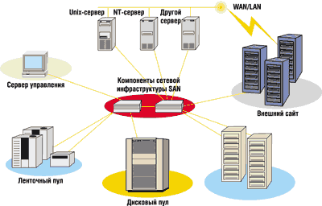
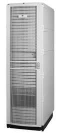
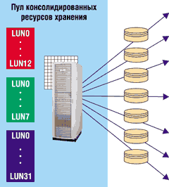
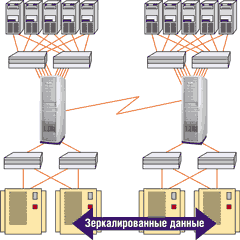
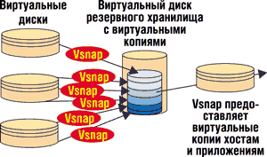

Анатолий Журкин функций.
Для решения проблемы хранения, управления и обеспечения доступности все возрастающих объемов информации многие организации развертывают сети хранения данных (SAN). Данная технология предусматривает отделение систем хранения от серверов приложений - это значительно улучшает качество обслуживания потребителей ресурсов хранения и сокращает расходы на администрирование хранения данных. Корпорация Hewlett-Packard (http://www.hp.com) первой в мире разработала полнофункциональную архитектуру, предназначенную для виртуализации сетевых средств хранения данных. Она призвана упростить управление средствами хранения данных, обеспечить более глубокое использование возможностей средств хранения данных, упростить работу служб хранения в разнородных системах.
Как известно, сеть хранения (рис. 1) обычно состоит из двух групп компонентов: функциональных (серверы, накопители) и инфраструктурных (адаптеры, концентраторы, коммутаторы). Чтобы реализовать виртуализацию на уровне сети хранения, две эти группы дополняются третьей, которую можно назвать управляющей. Она включает SAN-приставки, или SAN-серверы - вычислительные устройства, подключаемые к SAN или устанавливаемые на путях передачи данных. Эти устройства отвечают за топологию и реализуют абстрагирование данных от их места нахождения.
|  | Рис. 1. Структура SAN.
|
Объединенный пул хранения в SAN может быть симметричным или асимметричным. В первом случае говорят о применении технологии in-band SAN virtualization. Средства виртуализации категории in-band размещаются непосредственно на пути данных от приложения к коммутатору. Управляющее устройство находится на тракте обмена между серверами и накопителями, и потому весь трафик проходит через него. Здесь же осуществляется трансляция физических устройств в логические.
У симметричного решения есть очевидные достоинства - простота установки и администрирования; прозрачность для серверов и ОС (при использовании серверов приложений не требуются специальные драйверы), возможность расширять функциональность управляющего устройства независимо от серверов и систем хранения.
Асимметричный пул хранения (out-of-band SAN virtualization) строится с использованием сервера метаданных. Здесь предполагается наличие центральной точки управления и виртуализации с сохранением возможности прямой связи между серверами и накопителями. Таким образом при виртуализации в режиме out-of-band система управляет пересылкой данных между приложением и коммутатором или сервером на их пути к устройству хранения, находящемуся в сети. Средства управления виртуализацией этой категории подключаются непосредственно к коммутатору или серверу, на котором находятся все необходимые для этого драйверы. Следовательно, средства управления размещаются за пределами прямого маршрута прохождения данных и не могут стать узким местом.
HP получила более 100 патентов, связанных с технологиями виртуализации, и в настоящее время предлагает своим заказчикам самый широкий в отрасли выбор систем виртуализации, в том числе StorageWorks Enterprise Virtual Array, StorageWorks Virtual Array и HP OpenView Continuous Access Storage Appliance (CASA). Последняя система реализует репликацию, создание моментальных копий данных и перемещение данных в разнородных системах хранения информации. CASA - это решение типа in-band, весь трафик в сети SAN проходит здесь через устройство виртуализации.
CASA предназначается для обслуживания инфраструктуры SAN и может на базе сетей хранения выполнять функции зеркалирования и репликации данных, а также создания мгновенных снимков (snapshot). Кроме того, CASA упрощает и централизует управление дисковыми ресурсами и делает их распределение более гибким. Это устройство можно добавить в существующую сеть SAN или создать с его помощью новую сеть хранения; при этом поддержка ОС и систем хранения позволяет при развертывании SAN использовать лучшие в своем классе компоненты.
Стоит отметить, что система CASA (рис. 2) была создана в результате развития линейки продуктов StorageApps SANLink, Surestore SANlink и HP sv3000, на которые во всем мире продано более 700 лицензий. Первые устройства HP для сетей SAN появились в 2000 г. и назывались StorageApps SANLink. Затем появились системы HP SANlink, а совсем недавно - HP sv3000. В CASA мощные функции предыдущих поколений устройств дополнены рядом новых возможностей, при этом сохранена обратная совместимость с sv3000.
|  | Рис. 2. Внешний вид CASA.
|
CASA работает под управлением ПО SAN.OS 5.5, которое на основе виртуализации хранения реализует репликацию данных и другие сервисы для гетерогенной среды. Для повышения надежности, оптимизации производительности и упрощения подготовки к работе SAN.OS заранее инсталлируется на компьютерное оборудование стандартной архитектуры, которое поставляется либо установленным в стандартные стойки HP, либо в комплекте для установки в стойки заказчика. Для подготовки системы к работе можно прибегнуть к предоставляемым HP профессиональным сервисным услугам по установке CASA.
Установка
Итак, CASA можно использовать для расширения функциональности существующей SAN, построения новой SAN либо как специальное устройство для репликации системы хранения. Устройство оборудовано четырьмя портами для подключения к системам хранения и 10 портами для подключения хост-компьютеров, которые в рекомендуемой резервированной конфигурации повышенной доступности обеспечивают объединение двух систем хранения и пяти хостов. Чтобы увеличить число портов для систем хранения и хостов, требуются коммутаторы Fibre Channel.
Если существующая SAN с топологией "фабрика" модернизирована с помощью CASA, администратор систем хранения может направлять через это устройство все потоки ввода-вывода либо часть их. После инсталляции устройства хостам по-прежнему обеспечивается доступ к тем данным, которые они использовали до модернизации.
После установки физического соединения CASA опрашивает подключенные контроллеры систем хранения для определения имеющихся LUN. При этом на самих системах хранения не выполняется никакого форматирования; все существующие данные остаются на своем месте и по-прежнему доступны. На подключенных хостах запускается утилита регистрации, которая заносит информацию о них в регистр CASA. Дополнительное ПО на хостах не требуется, так что эта процедура не влияет на их производительность.
Подключение в гетерогенной среде
CASA обеспечивает подключение к наиболее распространенным серверным платформам и системам хранения ведущих производителей. Благодаря этому подготовка SAN к эксплуатации значительно упрощается: проводить тестирование на совместимость не нужно, а при проектировании сети хранения обеспечивается большая гибкость. Администратор систем хранения может сразу же подключить к SAN имеющиеся системы хранения и хосты. Еще более важно то, что при добавлении новых систем хранения не будет проблем совместимости с существующими системами. Заказчик сможет выбирать те продукты, которые наилучшим образом подходят для его задач. Это позволит добавлять в SAN лучшие в своем классе системы хранения и продлить жизненный цикл существующих систем.
Все системы хранения, включенные в список оборудования, которые CASA поддерживает, прошли тщательное тестирование. Стоит отметить, что HP постоянно проводит тестирование на возможность подключения к CASA разного оборудования и инвестирует в эти мероприятия значительные средства.
Графический интерфейс
Для большинства операций текущего управления и контроля в CASA предусмотрен графический интерфейс пользователя на базе Web-браузера. При удаленном администрировании с помощью браузера используются защищенная регистрация и ввод пароля. Начальная настройка и автоматизация повторяющихся процедур могут выполняться с помощью консоли с клавиатурой, видеоплатой и мышью, которую администратор может использовать с интерфейсом командной строки.
Организации, применяющие несколько устройств CASA для удаленной репликации данных, могут после однократной регистрации и ввода пароля управлять всеми устройствами через единую графическую оболочку, что значительно упрощает работу администратора. Кроме того, администратор CASA может задать процедуру регистрации для посетителей, которые будут иметь доступ только на чтение.
Управление хранением
После опроса LUN подключенных систем хранения с этими системами можно работать, как с виртуальными дисками CASA. Технология виртуализации хранения позволяет разбивать эти виртуальные накопители на многочисленные маленькие виртуальные диски либо объединять их для получения виртуальных дисков большой емкости. Администратор хранения управляет виртуальным диском независимо от того, на какой системе хранения физически расположена его емкость. Технология виртуализации хранения также позволяет реализовать на уровне виртуального диска ряд сервисов репликации данных.
Управление всеми подключенными ресурсами, как виртуальными дисками, очень эффективно. Один администратор систем хранения может управлять емкостью, которую раньше обслуживали два или три специалиста.
CASA позволяет конфигурировать и распределять дисковые ресурсы с помощью единого интерфейса. При этом миграция данных между массивами превращается в простую операцию, при выполнении которой доступ к данным не прекращается. Кроме того, если, к примеру, в SAN включены дисковые массивы разных производителей, они не окажутся изолированными "островками" - с емкостью всех систем хранения можно работать, как с объединенным ресурсом или пулом. Из общего пула администратор систем хранения может организовать виртуальные диски (рис. 3), которые будут защищенно распределены между хостами.
|  | Рис. 3. Из пула можно организовать виртуальные диски.
|
Репликация данных
Главная задача администратора систем хранения - обеспечение сохранности и доступности корпоративных данных. CASA значительно сокращает время, которое требуется для выполнения этой задачи, и упрощает связанные с ней операции. Кроме того, в CASA есть уникальная функция - возможность проводить репликацию данных в гетерогенной среде.
Имеющаяся в CASA функция зеркалирования данных позволяет получить полностью синхронизированные копии данных. Для получения "почти мгновенных" образов до заданной контрольной точки используется функция под названием Vsnap, а для репликации предусмотрен IP-шлюз, обеспечивающий подключение к сетям LAN/MAN/WAN без использования маршрутизатора систем хранения.
Каждая из опций репликации данных позволяет хранить оригинал и копию на разных системах хранения. Это делает процесс управления более гибким и помогает значительно уменьшить общую стоимость хранения.
Локальное зеркалирование
Устройство CASA способно создать зеркальную копию виртуального диска на любом другом диске такой же или большей емкости. Зеркалирование выполняется синхронно по протоколу Fibre Channel Protocol (FCP). Для повышения надежности можно создать несколько зеркальных копий виртуального диска на других виртуальных дисках. Новое в CASA - возможность расширения SAN каскадным соединением двух устройств.
Технология Fibre Channel позволяет подключить два устройства CASA, расстояние между которыми составляет несколько километров. К каждому устройству можно подключить хосты и системы хранения. Функция каскадирования позволяет организовать зеркалирование между системами хранения, подключенными к разным CASA. Кроме того, хост, подключенный к одному устройству, может получить доступ к данным системы хранения, подключенной к другому. Эта функция намного упрощает создание "зеркал" в разных зданиях для защиты данных от локальных аварий и неисправностей. Каскадирование (рис. 4) также позволяет сделать зеркалирование обоюдным, при этом каждое устройство CASA может выполнять функции резервной площадки для другого - при сбое или выходе из строя одного устройства его данные можно будет полностью восстановить. Новая функция соединения устройств в каскад позволяет расширить SAN на несколько километров для защиты от катастроф.
|  | Рис. 4. Функция каскадирования полезна для защиты от катастроф.
|
Мгновенные снимки
Функция Vsnap в CASA почти мгновенно создает точную виртуальную копию определенного виртуального диска на данный момент времени (рис. 5). Этот мгновенный снимок можно использовать и как исходный виртуальный диск. Преимущество CASA Vsnap по сравнению с некоторыми другими реализациями функции snapshot или instant image состоит в возможности чтения и изменения образа.
|  | Рис. 5. Функция Vsnap создает почти мгновенные виртуальные копии данных.
|
В отличие от режима локального зеркалирования в режиме Vsnap исходный виртуальный диск и его снимок поддерживаются независимо с помощью процесса copy-on-write. Перед модификацией данных на исходном виртуальном диске неизмененные данные копируются так, чтобы копия Vsnap была полностью идентична данным на момент запуска Vsnap.
Получение копий Vsnap может быть интегрировано в процесс резервного копирования данных в онлайновом режиме. Этот режим исключает задержки доступа к данным для приложений и пользователей. Другое обычное применение Vsnap - разработка приложений. Функция позволяет быстро и часто тестировать файлы и базы данных. Приложениям поддержки принятия решений требуются данные, которые они могли бы разделять на небольшие фрагменты и смешивать. Использование копий Vsnap позволяет сделать данные доступными быстрее, чем при физическом копировании, и в то же время не приводит к риску потери производственной информации.
Функция CASA Vsnap позволяет очень эффективно использовать дисковое пространство. Копия Vsnap содержит карту исходного виртуального диска на уровне блоков и физические копии только тех блоков данных исходного виртуального диска, которые были изменены со времени получения копии Vsnap. Поэтому для снимка требуется меньше физической емкости, чем для исходного виртуального диска. CASA позволяет снизить требования к физической емкости за счет хранения нескольких копий Vsnap на одном виртуальном диске. Такой виртуальный диск называется резервным хранилищем. Необходимая для резервного хранилища физическая емкость составляет всего 10-20% от исходного объема виртуальных дисков. Все виртуальные копии Vsnap можно назначать хостам и использовать как обычные виртуальные диски, управление ими не отличается от управления обычными накопителями.
Географически распределенное зеркалирование
Для обеспечения непрерывности бизнеса и защиты данных используется метод их зеркалирования на удаленную площадку. CASA реализует самое эффективное на сегодняшний день решение для географически распределенного зеркалирования. Оно предполагает установку CASA на локальной и удаленной площадках. Имеющийся в каждом CASA порт Gigabit Ethernet (GbE) обеспечивает IP-шлюз SAN для соединения CASA с IP-сетью, в роли которой может выступать выделенная сеть, совместно используемая сеть и даже Интернет. Устройство CASA оборудовано двумя портами GbE для зеркалирования на большом расстоянии, поэтому для повышенной надежности между местным и удаленным CASA можно организовать два независимых канала связи. CASA позволяет синхронно или асинхронно зеркалировать данные между географически удаленными площадками по IP-сети.
Любой виртуальный диск локального CASA можно зеркалировать на любой виртуальный диск удаленного CASA, имеющий такую же или большую емкость. Возможно и зеркалирование удаленного устройства на локальное. Для каждой пары можно задать режим асинхронного или синхронного зеркала - выбор зависит от требований администратора хранения к актуальности данных на удаленной площадке и от того, как она соотносится с задержкой ввода-вывода локальных систем хранения.
При синхронном зеркалировании копия исходного виртуального диска создается в реальном времени на удаленной площадке. Подтверждение на запрос записи выдается приложению только после его выполнения на системах хранения, подключенных как к локальному, так и к удаленному CASA. Такой метод вносит дополнительную задержку при операциях записи. Пока существует связь между двумя CASA, гарантируется поддержание согласованных образов виртуального диска на обеих площадках.
При асинхронном зеркалировании на удаленной площадке создается копия виртуального диска, которая отслеживает изменения исходного виртуального диска на местной площадке. Этот метод не создает дополнительную задержку при записи.
При выборе режима зеркалирования необходимо учитывать пропускную способность и надежность каналов связи между площадками. Для асинхронного IP-зеркалирования требуется высокоскоростная сеть (возможно, выделенная). Для синхронного зеркалирования необходимо обеспечить надежную связь, поскольку при ее отказе будет нарушен ввод-вывод приложений. При асинхронном зеркалировании операции записи ставятся в очередь в местный журнал, а затем передаются на удаленную систему хранения. Размер файла журнала может быть увеличен до 1 Тбайт для компенсации низкой скорости канала или его сбоев. Из журнала в удаленное CASA-устройство запросы на запись передаются в том же порядке, в каком они были выданы на локальной площадке. При этом гарантируется согласованность часов на обеих площадках для получения образа данных на удаленной площадке, с помощью которого можно провести восстановление.
Применение CASA вместо решений на основе контроллеров систем хранения дает при удаленном зеркалировании ряд преимуществ, основное из которых - значительное снижение расходов. Кроме того, CASA может зеркалировать данные между системами хранения разных производителей. Однако не следует забывать, что удаленное зеркалирование с помощью CASA не обеспечивает автоматического переключения на копию при отказе основной площадки и восстановления после него. Если требуется реализовать такой тип непрерывного доступа к данным, то следует использовать решение типа HP StorageWorks Continuous Access XP.
Сокращение стоимости удаленного зеркалирования данных за счет использования CASA (по сравнению с решениями на базе контроллеров) означает расширение круга компаний и организаций, которым эта технология доступна. Многие организации, применяющие локальное резервное копирование на магнитные ленты, теперь с помощью CASA могут использовать для решения этих задач удаленное зеркалирование.
CASA не только обеспечивает восстановление после аварий и непрерывность бизнеса, но и реализует централизованное резервное копирование данных в территориально-распределенных SAN. Данные, управляемые несколькими CASA, можно зеркалировать на одном CASA. Такое зеркалирование позволяет копировать на одно устройство данные с трех CASA.
Комбинирование опций репликации
Описанные выше опции репликации данных можно комбинировать для повышения надежности инфраструктуры хранения и сокращения нагрузки на производственную систему хранения.
Например, при использовании каскадирования можно организовать локальное синхронное зеркалирование между системами хранения, расположенными в разных зданиях кампуса. При этом в одном здании можно разместить производственную систему хранения, а в других - системы хранения с зеркальными копиями ее данных. Вторичная система хранения может зеркалироваться на систему хранения, установленную на удаленной площадке, с помощью зеркалирования по IP-сети. Такое решение реализует два уровня зеркалирования и обеспечивает более надежную защиту данных, а при использовании синхронных зеркал обеспечивается высокая скорость и простое восстановление.
Кроме того, виртуальный диск CASA может служить источником для локального зеркалирования (на базе FCP) и удаленного зеркалирования (на базе IP) - такое дублирование обеспечивает дополнительную защиту. Виртуальный диск, на котором создается копия, может служить исходным для Vsnap, а копии, полученные с помощью Vsnap, могут использоваться для восстановления данных в онлайновом режиме и архивирования данных на ленте.
Примеры использования
В большинстве организаций информация, связанная с основными бизнес-процессами, хранится в базе данных. Зачастую БД считаются критически важными и поэтому для их защиты используются средства онлайнового восстановления, интегрированные с системами хранения класса high-end, например, HP Continuous Access XP или EMC Symmetrix SRDF.
Копии БД используются для восстановления после сбоев, тестирования, разработки, выполнения запросов и архивирования. В результате часто приходится поддерживать одновременно до семи копий базы данных. Если эти копии (как правило, статичные) хранятся в той же системе хранения, что и производственная база данных, имеет смысл переместить их на другой дисковый массив более низкого класса. Применение CASA позволяет системному администратору наладить гибкое управление и решить эту задачу.
Обычно основная БД с одним или несколькими зеркалами размещается в производственной системе хранения. С одного из этих зеркал CASA создает копии, записывая их на другие, более дешевые системы. Такой метод позволяет организациям перемещать копии для тестирования, разработки и запросов на недорогие системы хранения, что сразу снижает затраты, связанные с хранением данных. При этом производственной БД выделяется больше ресурсов ввода-вывода и пропускной способности системы хранения класса high-end.
Функция CASA Vsnap позволяет реализовать альтернативу физическому копированию БД, более эффективную с точки зрения экономии дискового пространства. Vsnap копирует данные практически мгновенно, и при копировании ей требуется обычно только 10-20% физического пространства, занимаемого исходными данными. В дисковых системах класса high-end стоимость хранения обычно превышает 10 центов на 1 Мбайт, поэтому применение копий Vsnap поможет сэкономить значительную сумму.
CASA позволяет переместить основную базу данных и копии базы данных за пределы производственной системы хранения, что удешевляет хранение, экономит дисковое пространство (благодаря Vsnap) и улучшает производительность приложений, использующих БД.
Другой пример связан с удаленным резервным копированием. Известно, что решения для восстановления данных в онлайновом режиме дороги. Даже в организациях, использующих эту технологию, она зачастую охватывает только часть данных. Затраты на приобретение дисковых систем класса high-end и дорогих интегрированных решений восстановления после катастроф оправданны только для самых важных для организации данных, но не для всей нужной для бизнеса информации.
Резервное копирование на магнитную ленту - это проверенное и надежное решение, значительно более дешевое, чем восстановление в онлайновом режиме. Но хотя в последние годы пропускная способность систем повышается, восстановление с ленты может занять несколько часов (плюс время, необходимое для доставки лент из удаленного хранилища).
CASA реализует решения резервного копирования, обеспечивающее более быстрое восстановление по сравнению с решениями на базе магнитной ленты, сокращая объем данных, которые будут потеряны в случае катастроф при резервном копировании в ночную смену. При этом затраты оказываются значительно меньшими, чем при восстановлении систем хранения в онлайновом режиме.
В качестве примера можно привести организацию, в которой есть центральный офис и несколько региональных. На каждой площадке организован режим резервного копирования на магнитную ленту в ночную смену. Ленты с резервными копиями находятся в удаленном хранилище. Для этой организации слишком дорого внедрить решение для восстановления системы хранения данных в онлайновом режиме даже для центрального офиса, но требуется быстро выполнить восстановление и уменьшить риск потери данных.
Соединение систем хранения с хостами через CASA позволяет перемещать данные по схеме восстановления в онлайновом режиме. CASA получает данные, которые необходимо защитить. Используя функцию Vsnap, можно с постоянной периодичностью создавать образы данных. Они будут храниться в онлайновом режиме на случай, если потребуется восстановление. Доступ к этим Vsnap-снимкам также получает хост, на котором выполняется приложение резервного копирования, поэтому данные можно периодически архивировать на ленту для их защиты от аппаратных сбоев.
Такую схему можно достраивать, постепенно увеличивая объем данных, доступный через CASA. Кроме того, эффективность можно еще увеличить с помощью функции удаленного зеркалирования данных CASA. При установке CASA в региональных офисах данные можно реплицировать через IP-сеть на другую региональную площадку или центральный офис. Можно также организовать централизованное резервное копирование на одной площадке. Одно CASA-устройство способно функционировать как удаленное зеркало для трех других, позволяя организовать на одной удаленной площадке резервный центр. Типичный план защиты данных при такой конфигурации предусматривает зеркальное копирование данных регионального офиса в центральный офис и последующее создание для них копий Vsnap. Используя эти копии Vsnap, администратор систем хранения может выполнять резервное копирование на центральную ленточную библиотеку.
Последний пример посвящен миграции данных на новую систему хранения. Как известно, во многих случаях миграция данных требует значительных затрат времени администратора и делает данные недоступными для приложений. Эта операция значительно усложняется, если в старой и новой системах хранения применены разные модели или продукты разных фирм-производителей.
CASA обеспечивает простой способ миграции данных между одинаковыми или разными системами хранения. Исходная и принимающая системы хранения должны быть подключены к CASA, а необходимые LUN - "открыты" для CASA. Локальное зеркалирование на базе FCP используется для копирования исходных данных на принимающую систему хранения. После завершения синхронизации "зеркала" виртуальный диск CASA, используемый хостом, заменяется на виртуальный диск с копией данных, и затем связь с "зеркалом" разрывается. Эти операции можно провести прозрачно для приложений хоста.
Кроме быстрого интегрирования новой системы хранения, CASA обеспечивает решение для непрерывной работы в среде с меняющимися требованиями к доступности. Можно также организовать миграцию данных между системами хранения для улучшения доступности и защиты.
Безопасность данных
Как уже отмечалось, устройство CASA расположено в центре SAN, и через него проходят файлы и данные приложений, а также управляющие данные. Это повышает безопасность, поскольку CASA управляет доступом хостов к виртуальным дискам.
CASA позволяет администратору систем хранения централизованно управлять доступом к данным, находящимся на разнородных системах хранения. На этом устройстве содержится БД с правами доступа для всех подсоединенных хостов и устройств хранения.
При добавлении хоста к SAN он не может получить доступ к данным на LUN, выделенным для CASA, если администратор сначала не установил права доступа на уровне CASA. В результате все виртуальные диски маскируются от хостов до тех пор, пока администратор систем хранения не назначит их хостам. Это решение позволяет реализовать более гибкую политику разграничения доступа, чем при использовании только таких функций безопасности коммутатора фабрики SAN, как зонирование.
Производительность и масштабируемость
Все файлы, данные приложений и управляющая информация SAN проходят через CASA. В этом смысле устройство похоже на коммутатор Fibre Channel. Производительность CASA в установившемся режиме составляет до 80 тыс. операций ввода-вывода в секунду (IOPS), а его пропускная способность достигает 800 Мбайт/с. Программное обеспечение SAN.OS, обеспечивающее функциональность CASA, - это многопотоковое приложение, вносящее минимальную задержку в маршруты ввода-вывода.
Без коммутатора Fibre Channel можно построить резервированную конфигурацию повышенной доступности, подсоединив к CASA до двух систем хранения и до пяти хостов. В нерезервированной конфигурации максимальное число систем хранения и хостов удваивается. При построении CASA SAN с дополнительными коммутаторами рекомендуемая максимальная конфигурация включает примерно 20 хостов, четыре системы хранения среднего класса либо одну систему корпоративного класса. Очевидно, что максимальные значения определяются профилем ввода-вывода и зависят от типа приложений, работающих на хостах, и емкости систем хранения. Обычно рекомендуемый максимум для одного CASA составляет около 150 Тбайт гетерогенного дискового пространства. Новая возможность каскадирования CASA удваивает рекомендуемый максимум числа хостов и систем хранения для расширенной SAN. Под управлением CASA могут находиться до 4096 LUN подключенных систем хранения.
Заключение
HP планирует расширить сферу приложения систем CASA, применяя технологию VersaStor как на платформе CASA, так и в интеллектуальных коммутаторах. Это позволит распределить обработку данных по всей сети хранения и более эффективно маршрутизировать потоки ввода-вывода в зависимости от требуемых сервисов хранения данных.
Разработанная HP технология сетевой виртуализации реализуется по модульному принципу и позволяет заказчикам приспосабливать инфраструктуры хранения данных к изменяющимся потребностям. Заказчики получают также возможность наращивать свою инфраструктуру по мере необходимости, добавляя и распределяя ресурсы по собственному усмотрению. Благодаря этим возможностям обеспечивается защита инвестиций в ИТ. Уже сегодня заказчики HP могут начать внедрение CASA в свои сети хранения данных для обеспечения работы служб репликации и перемещения данных. В этом году они также смогут начать внедрение усовершенствованных систем CASA с технологией VersaStor и установку в сетевые инфраструктуры VersaStor-коммутаторов. Как в настоящее время, так и в будущем управление этими системами будет осуществляться при помощи программных пакетов HP OpenView Storage Area Manager.